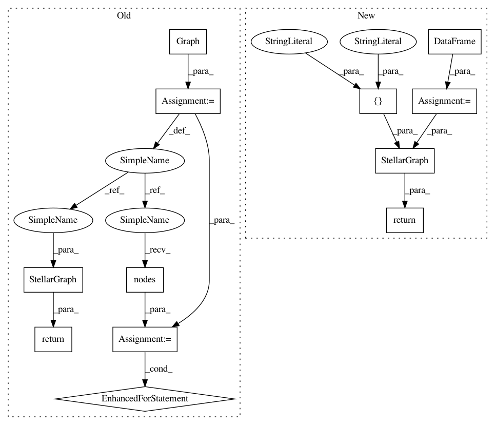

b17c639862ab1b9ab14e8c55a70e0ce002967e3f,tests/mapper/test_link_mappers.py,,example_HIN_homo,#Any#,64
Before Change
def example_HIN_homo(feature_size_by_type=None):
G = nx.Graph()
G.add_nodes_from([0, 1, 2, 3, 4, 5], label="user")
G.add_edges_from([(0, 4), (1, 4), (1, 5), (2, 4), (3, 5)], label="friend")
// Add example features
if feature_size_by_type is not None:
for v, vdata in G.nodes(data=True):
nt = vdata["label"]
vdata["feature"] = int(v) * np.ones(feature_size_by_type[nt], dtype="int")
G = StellarGraph(G, node_features="feature")
return G
def example_hin_random(
feature_size_by_type=None, nodes_by_type={}, n_isolates_by_type={}, edges_by_type={}
After Change
else:
features = []
nodes = pd.DataFrame(features, index=nlist)
edges = pd.DataFrame(
[(0, 4), (1, 4), (1, 5), (2, 4), (3, 5)], columns=["source", "target"]
)
return StellarGraph({"B": nodes}, {"F": edges})
def example_hin_random(
feature_size_by_type=None, nodes_by_type={}, n_isolates_by_type={}, edges_by_type={}
In pattern: SUPERPATTERN
Frequency: 3
Non-data size: 12
Instances
Project Name: stellargraph/stellargraph
Commit Name: b17c639862ab1b9ab14e8c55a70e0ce002967e3f
Time: 2020-03-03
Author: Huon.Wilson@data61.csiro.au
File Name: tests/mapper/test_link_mappers.py
Class Name:
Method Name: example_HIN_homo
Project Name: stellargraph/stellargraph
Commit Name: 55ed2c7f725791f31983560c4ad520b2e0dc8e58
Time: 2020-03-03
Author: Huon.Wilson@data61.csiro.au
File Name: tests/data/test_metapath_walker.py
Class Name:
Method Name: create_test_graph
Project Name: stellargraph/stellargraph
Commit Name: b17c639862ab1b9ab14e8c55a70e0ce002967e3f
Time: 2020-03-03
Author: Huon.Wilson@data61.csiro.au
File Name: tests/mapper/test_link_mappers.py
Class Name:
Method Name: example_HIN_homo
Project Name: stellargraph/stellargraph
Commit Name: b17c639862ab1b9ab14e8c55a70e0ce002967e3f
Time: 2020-03-03
Author: Huon.Wilson@data61.csiro.au
File Name: tests/mapper/test_node_mappers.py
Class Name:
Method Name: example_graph_2